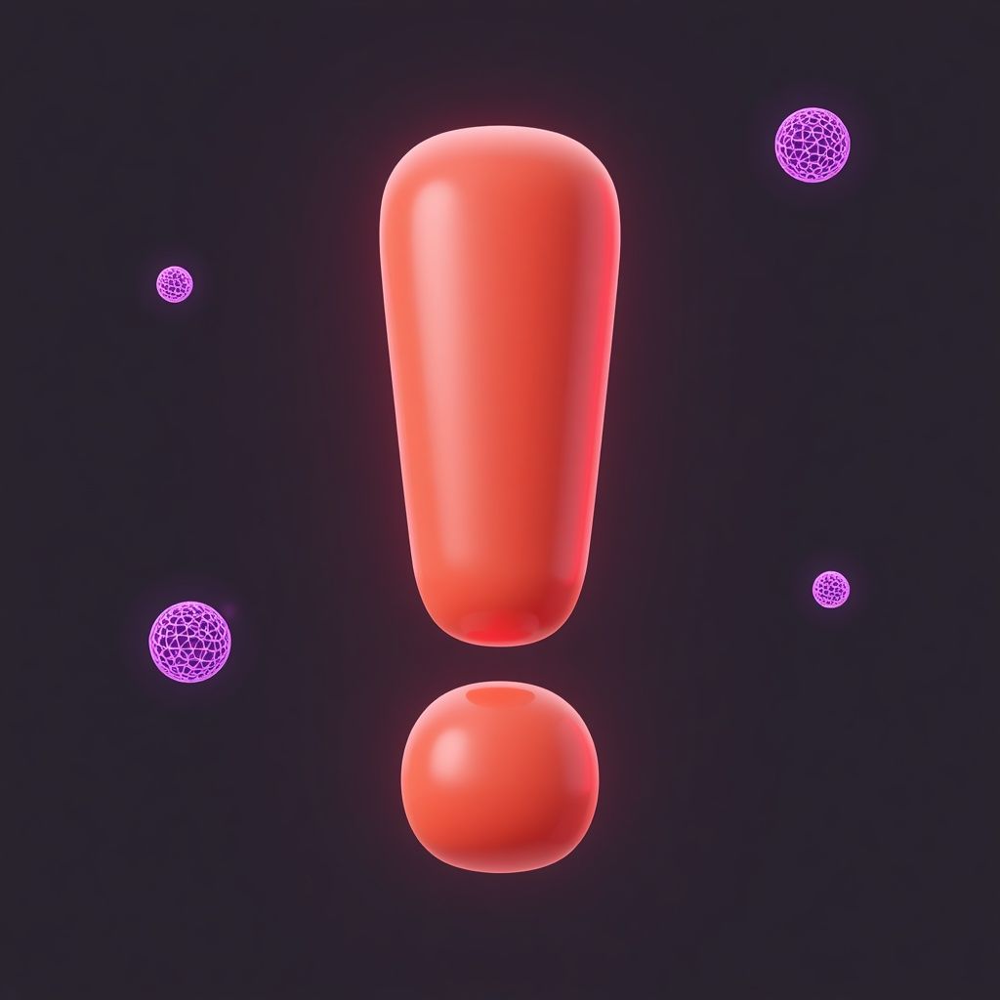

Полный скрипт разговора с родителем — от приветствия до финального закрепления записи.

Говорить с улыбкой, сразу назвать повод, не тараторить.
Если нет имени:
После ответа — короткое тёплое присоединение.
Не читать портянку — говорить «по‑человечески», 1–2 предложения.
После каждого ответа клиента — короткая реакция + уточнение.
→ «Поняла, [имя], [возраст], [класс].»
→ «Понимаю, это частая история. А что учитель говорит про чтение и работу с текстом?»
→ «Верно ли понимаю, что для вас главное — [перефразировать: быстрее/понимать/оценки]?»
Обязательно сделать мини‑перефраз.
Говорить спокойным уверенным тоном, без давления.
→ «Поняла, спасибо, что честно сказали.» (Не оценивать, просто отметить.)
Подчёркивать важность родителя, а не «контроль ребёнка».
→ «Отлично, тогда подберём время, когда вы сможете быть вместе на связи.»
Говорить спокойно, не суетиться, не озвучивать сомнения вслух.
Если нет — кратко уточняем разницу: «Сейчас в Москве [X] часов, у вас сколько? Значит, разница [N] часов.»
→ «Отлично. Итак, записываю вас на [день недели], [дата], в [время] по Москве.»
Говорить медленнее, чётко, смотреть на одну точку, не печатать.
Ждём чёткое «да».
Не бояться паузы — дождаться «да, договорились».
Не зачитывать — сказать коротко и искренне.
Ищем с личного аккаунта аккаунт клиента.
Клиент должен вслух согласиться — это обязательная фраза.
Финальный повтор: